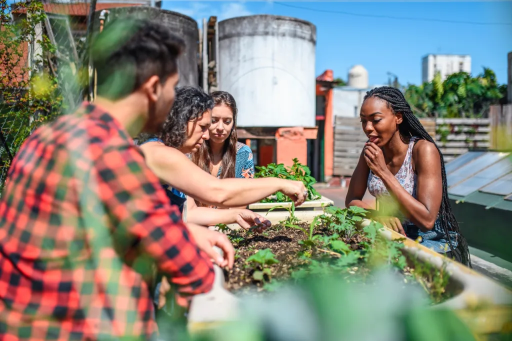

Consejos
Para Empresas
Las empresas pueden adoptar prácticas sostenibles a través del diseño y producción responsables, así como obtener certificaciones como ISO 14001.
Implementar programas de reciclaje en la oficina y reducir el uso de papel mediante la digitalización de documentos.
Fomentar el uso de transporte público o compartido entre los empleados para reducir la huella de carbono.
Utilizar fuentes de energía renovable y mejorar la eficiencia energética en las instalaciones.
Promover la responsabilidad social corporativa y colaborar con proveedores que también sigan prácticas sostenibles.
Para Ciudadanos
Los ciudadanos pueden contribuir a los ODS ahorrando agua, separando residuos y usando productos locales. Pequeñas acciones hacen una gran diferencia.
Reducir el consumo de energía apagando luces y electrodomésticos cuando no se estén utilizando.
Optar por medios de transporte sostenibles como la bicicleta, caminar o el uso de transporte público.
Comprar productos con menos embalaje y reutilizar bolsas de compra para reducir el desperdicio.
Participar en actividades comunitarias de limpieza y conservación del medio ambiente.
Plantar árboles y mantener jardines para mejorar la calidad del aire y promover la biodiversidad.
